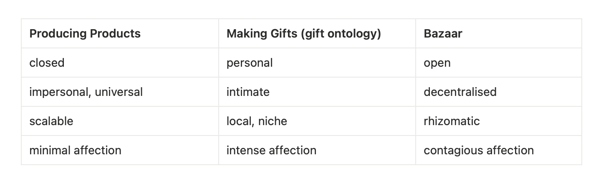

A. On Folk Practice — to break from normative forces.
Over the past year, I am not the author of this article and its insight—it has always been crafted together and I participated in its articulation. We went far and reached impossible places, which precisely is the point of probing and voyaging. I call us friends and our activity friending. My work simply boils down to friendship—I do things with friends, because of friends, for my friends.
I am still on my quest, but nowadays, I find folk practice to be most aligned with a decolonial, intimate mode of becoming. However, we need to update what we include when we say “folk”.
Folks and friends must be understood across space-time-matter. The term folks includes our ancestors, literature¹, minerals, plants, teachers², aspirations, ideas and so on. It cannot be limited to human-centric bodies. And secondly, they are reciprocal.
In contrast to scientific practice—where knowledge is derived from an objective, universalised, repeatable method, or capitalistic habit—where production is made for a universal, scalable market, folk practice comes from knowledge-making and craft within one’s own community. It’s local, special³, and intimate.
The term ‘folk practice’ was historically mobilised by colonisers and scholars to differentiate science (“legitimate” ways of knowing) from the local ways of knowing they were studying—or seeking to dominate. I am subverting this inherited framing by reclaiming the power of horizontal ways of doing, making, and knowing. However, folk practice has to come from the willingness towards contamination⁴, not doctrines⁵.
By contamination, I also subvert its framing from the normative sense. In journal 18, we made a breakthrough and introduced the Diffractive Model of Intimacy⁶, which contrasts with the dominant Interpersonal Model of Intimacy. In such (autistic) dance of perception, friendship is not about the relationship between humans, but a state of becoming contaminated, where the cosmos meets itself and opens up cracks that diverge from the normative scripts⁷. To go far, one has to get contaminated, get affected by folks and friends one has not imagined welcoming in before.
Whereas science and capitalism operate on a logic of subtraction (removing context to make results and products repeatable), folk practice⁸ operates on a logic of addition and situated connection, contaminated by relations across space-time-matter.

 Folk practice with salt making by Mat Bet..
Folk practice with salt making by Mat Bet..
B. On Gift and Bazaar — to inhabit a new reality.
“I try to print a world into existence that is as welcoming and nurturing as the universe is to me.” —
Amos Paul Kennedy Jr.,
Citizen Printer
Through the last 11 journals, The Architecture of Intimacy has traced a pattern language of intimacy, and perhaps inherently, we diverge from dominant narratives. But outside PTP and into everyday life, most environments function as strata that reduce a person’s intensity, coding their energy back into dominant forms and normative lines. My present concern is how we might protect such minor lines from being absorbed back into the dominant order⁹. How do we sustain our discovery from being recoded by the dominant norms, structures, and logics that define what is legible, valuable, or “normal” in our given society?¹¹
Here is where folk practice offers a clue. Unlike scalable branded products or the reverence of the cathedral, both imbued with a desire to indoctrinate ‘otherness’ into universal, standardised norms, folk practice arises in the everyday acts of friending. It’s messy and fun. As a maker and lover situated in our given world, I see gifting and bazaar as lines of flight—strategies for breaking from dominant norms and sustaining the minor lines.

Gift-ontology shifts affect of creating from scarcity and separation toward a recognition of friendship, entanglement, and intimacy, while bazaar12 is a style of decentralised co-creation, a platform and attitude where gifts can proliferate. Together, they create assemblages in which environmental perception, relational ontology, and diffractive intimacy are not pathologised or neutralised but given room to flourish.
It is thanks to the welcoming assemblage from Haruma, Shotaro, and many more, that I can arrive at this collective insight. Ending season 2, I hope you —our readers and colleagues— the assemblage that allow you to join lines of flight, enabling your life the intensity, passion, freedom, and joy that your heart knows is possible. What we create in PTP is always a friend of such ventures. And I look forward to test a gifting bazaar in my own life. Best of luck!
Footnotes
¹ In this series, we have been contaminated by authors and literature across disciplines: From
Barad’s New Materialism,
Deleuze and Guattari’s assemblage theory,
Erin Manning’s environmental awareness,
Carol Gilligan’s relational ontology,
Christopher Alexander’s Pattern Language to name a few.
² Footnote ¹ are my teachers, so are the Buddhas, my sangha, peers, adversaries, “lucky” encounters, and so forth.
³ The term “special” here does not mean exceptional or superior, but rather singular: bound to its context, unrepeatable, and resistant to mass production. Folk practices are “special” precisely because they cannot be abstracted into a universal formula or scaled without losing their meaning.
⁴ I use contamination in alignment with Anna Tsing’s Mushroom at the End of the World, read post-script here.
⁵ “Willingness towards doctrines”: just accepting uncritically what the dominant narratives say.
⁶ Or, I now usually call it the decolonial perspective of intimacy—a phrasing that is easier for my peers to understand outside the language of New Materialism.
⁷ By “normative script,” I mean the social expectations, rules, and storylines that prescribe how we are supposed to act, feel, and relate. These scripts are invisible and totalising: they tell us what counts as a “proper” friendship, feeling, thought etc. and they work by normalising certain behaviours while marginalising and erasing others.
⁸ Insight, as discussed in journal 14, is close to my understanding of folk knowledge. It is knowledge with the world, emerging from one own’s intimate entanglements (locality, relationality, affect).
⁹ Majoritarian codes or dominant order are not necessarily “the majority” in terms of number, but rather the standard that everything else is measured against.
¹⁰ Minor lines: odd and delicate trajectories that are always in danger of being reterritorialised by majoritarian codes⁹.
¹¹ Deterritorialisation: a line of flight, a movement away from established structures, codes, or territories. It destabilises the dominant order. Reterritorialisation: what usually follows — the dominant order (or a new order) captures, reinscribes, or stabilises that movement back into recognisable, “legible” forms. In A Thousand Plateaus, these processes are always coupled: deterritorialisation never exists alone; reterritorialisation is how power or order reclaims the escape.
¹² I have an obsession with bazaar and was even invited to an activistic scholar program in Italy, 2023, part of which advocated for bazaars instead of supermarkets. But bazaar in Eric Raymond’s sense and its new imaginations were introduced to me by Haruma Kikuchi, and his co-creation of uni.ba.


{kind=link}